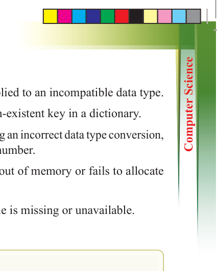
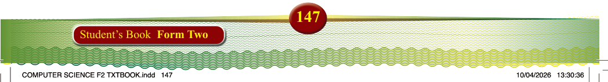

5. Type error: Happens when an operation is applied to an incompatible data type.
6. Key error: Occurs when trying to access a non-existent key in a dictionary.
7. Type conversion error: Happens when attempting an incorrect data type conversion, such as converting a non-numeric string to a number.
8. Memory error: Occurs when the system runs out of memory or fails to allocate sufficient memory.
9. Import error: Happens when a required module is missing or unavailable.
Exercise 3.9
1. Students write a Python program, but it crashes due to a syntax error. What steps should they take to identify and fix the error?
2. A program runs without errors but gives the wrong result. How can you debug this type of issue?
3. A user tries to divide a number by zero, causing a crash. How can error handling be used to prevent this issue? Write a simple code example.
4. Why is error handling important in programming? Explain how it improves the reliability of a program.
5. How can print statements help in debugging? Give an example of how you would use them to check variable values in a program.
6. Modern IDEs provide debugging tools like breakpoints. How do breakpoints help find and fix errors?
Chapter Summary
Reflect on what you have learnt from this chapter, summarise, and keep it in your
portfolio.